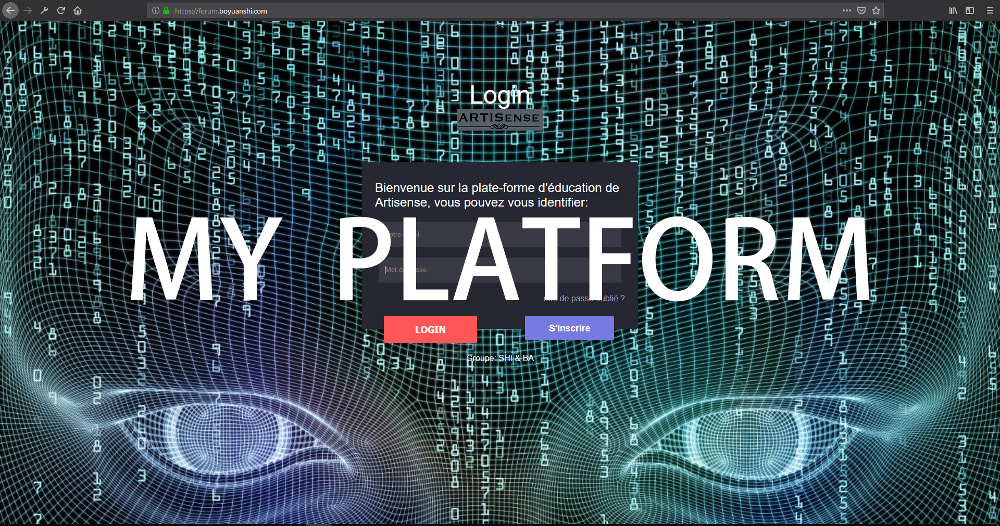

I built this platform to practice Php
and Mysql. It is like an educational platform. You can register and log in. There are
two different accounts. The student account can only read the courses. The teacher's
account can create courses, edit courses and also modify some student information.
Click to preview.
-
Web Design
This website is designed by myself, it has only one HTML file. There are still many new ideas I want to add. This site is currently version 4. I used html, css, js, jQuery, php, and extra fonts. This site is responsive, that means you can browse it on any device on any browser. I also built a blog site and a forum site that you can preview in next section. I used WordPress to creat my blog and an E-commerce website(Already abandoned, because nobody buys my merchandises). I also write down what I always forget in my blog, so I don't have to go to Google every time when I need it.
-
Android development
This is the direction I started researching some time ago. For this reason, I have studied a lot of JAVA courses. After I studied for a few months, I developed an interesting little game and a small application. You can download and try in the achievement section. (If you have an Android phone), of course these applications are not perfect, I will continue to update.
-
My friend Linux
When I started to touch the Linux operating system a few years ago, I just thought that it was fun to play the command, but I didn't know what it could do (mainly no way to play video games). When I actually used it, I found it is the best operating system. First of all it's free, and I use it to host my Website and my Webapp, I also run it for Backup and Torrenting. I also saved my old laptop, cuz Windows is far from the ideal OS. Thanks to Linux, I knew more about how computers work for it.
How to evaluate linux, as Neal Stephenson said: "Mac OS is a luxury European car, Windows is a station wagon, and Linux is a free tank." -
Softwares, Languages and Commands
I can skillfully use all the software in the above picture which are: Microsoft Office, Android Studio, Matlab, Visual Studio, Premiere cc, Photoshop cc, Audition cc...I also tried some Videogame engine such as Unity and Unreal Engine which are really interesting for me. For the programming languages, I can do C language, Php, Java, Html, CSS, JavaScript, Python. And for comands, I know well about Mysql, Linux, Commandes shell, VIM, etc.
-
A little network engineer
I can do some network tasks thanks to my education in IUT and my intership: I can establish the networking environment , implement new solutions and improve resilience of the current environment. Maximise network performance by monitoring performance, troubleshooting network problems and outages, secure network systems by establishing and enforcing policies, and defining and monitoring access support and administer firewall environments.
MY WORKS